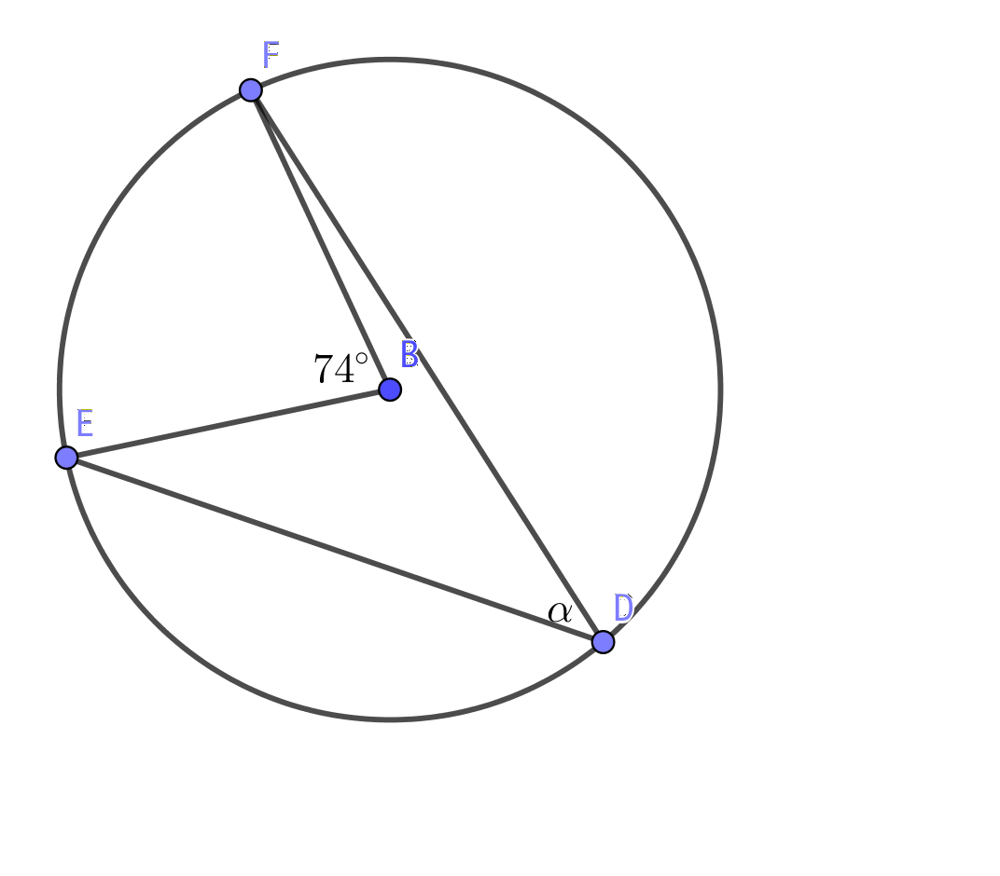
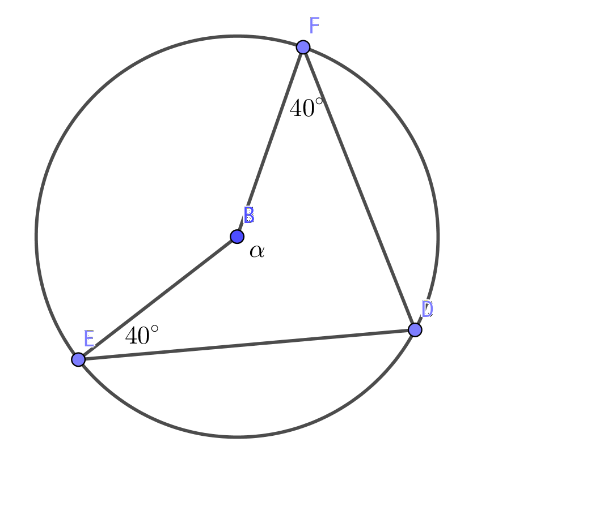

12. Bågvinkeln
Vi studerar sambandet mellan storleken för mittpunktsvinkeln, A, och bågvinkeln B.
- Flytta på punkten B. Vad händer med storleken för B?
- Flytta på punkten C och D. Vad händer med storleken för mittpunktsvinkeln och bågvinkeln?
Vi märker att vinkeln i mitten, mittpunktsvinkeln, alltid är dubbelt så stor som och vinkeln på omkretsen, bågvinkeln. Sambandet mellan mittpunktsvinkeln och bågvinkeln tränar vi till nästa.
Storleken av bågvinkeln (CBD) är alltid hälften av mittpunktsvinkeln (CAD).
Exempel 1 Bestäm storleken av \( \alpha \) och \( \beta \).

Lösning
Eftersom \( \beta \) är bågvinkel till 60o så är \( \beta \) hälften av mittpunktsvinkeln. \( \beta = 30^{\circ} \).
För \( \alpha \) gäller att mittpunktsvinkeln är \( 360^{\circ}-60^{\circ} = 300^{\circ} \). \( \alpha \):s storlek är hälften av detta, \( 150^{\circ} \).
Uppgifter
- Bestäm storleken av \( \alpha \).

Bågvinkeln är hälften av mittpunktsvinkeln, \( \dfrac{74^{\circ}}{2} = 37^{\circ} \)

Bågvinkeln är hälften av mittpunktsvinkeln, \( \dfrac{130^{\circ}}{2} = 65^{\circ} \)

Bågvinkeln är hälften av mittpunktsvinkeln, \( \dfrac{180^{\circ}}{2} = 90^{\circ} \)
- Bestäm storleken av \( \alpha \).
-
Mittpunktsvinkeln är dubbelt så stor som bågvinkeln, \( 2 \cdot 50^{\circ} = 100^{\circ} \)
-
Mittpunktsvinkeln är \( 360^{\circ} - 250^{\circ} = 110^{\circ} \). Bågvinkeln är hälften av mittpunktsvinkeln \( \dfrac{110^{\circ}}{2} = 55^{\circ} \)

Mittpunktvinkeln är dubbelt så stor som bågvinkeln \( 2\cdot 110^{\circ} = 220^{\circ} \).
\( \alpha \) är \( 360^{\circ} - 220^{\circ} = 140^{\circ} \).
-
- Bestäm storleken av \( \alpha \).

Mittpunktsvinkeln är 50o, då är bågvinkeln hälften av detta, 25o.

Vi använder oss av likformighet. Vinklarna som uppstår där trianglarna möts är varandras vertikalvinklar. Det betyder att motstående vinklar är lika stora.
I de likformiga trianglarna motsvarar \( \alpha \) av 45o vinkeln.
-
Vi använder oss av likformighet. Vinklarna som uppstår där trianglarna möts är varandras vertikalvinklar. Det betyder att motstående vinklar är lika stora.
I de likformiga trianglarna motsvarar \( \alpha \) av 60o vinkeln.
- Bestäm strorleken av vinkeln \( \alpha \).

Vi har en fyrhörning, \( EBDF \). Vinkelsumman för den är 360o. Dessutom är vinkeln EDF, \( \beta \) bågvinkel till \( 360^{\circ} - \alpha \).
Vi bildar ekvationen \( \alpha + 2\cdot 40^{\circ} + \dfrac{360^{\circ}-\alpha}{2} = 360^{\circ} \). Vi får att \( \alpha = 100^{\circ} \).
- Bestäm strorleken av vinkeln \( \alpha \).

Vi har en fyrhörning, \( EBDF \). Vinkelsumman för den är 360o. Dessutom är vinkeln \( \alpha \), bågvinkel till \( 360^{\circ} - \text{FBE} \).
Vi bildar ekvationen \( \alpha + 15^{\circ} + 35^{\circ} +(360^{\circ} -2\alpha) = 360^{\circ} \). Vi får att \( \alpha = 50^{\circ} \).
- Tvärsnittet för en träbalk har formen av en triangel. Sidorna för balken är 4,0 cm, 6,0 cm och 8,0 cm. Hur stor diameter skall ett hål ha då man vill borra ett runt hål där balken kan träs igenom?
Vi jobbar med sinus och cosinussatsen. 7,1 cm
- Två cirklar skär varandra i punkterna A och B. Från punkten A ritar man diagonalerna för bägge cirklar AC och AD. Visa att punkterna B, C och D är på samma linje.
Lösningen